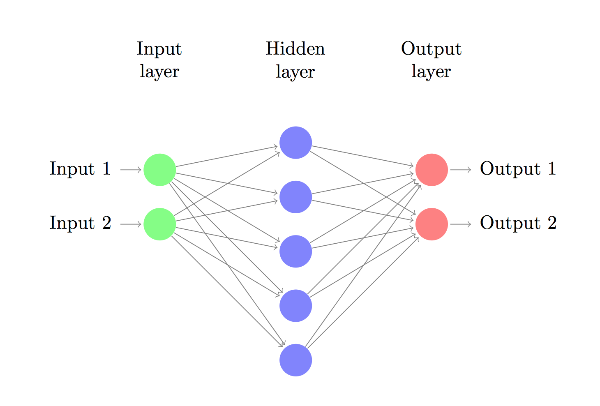

A Streamlit-based application that lets users analyze and interact with the content of news articles using OpenAI's language models and vector embeddings. The tool loads article URLs, chunks and embeds the content with FAISS, and enables users to ask natural language questions—delivering contextual answers through Retrieval-Augmented Generation (RAG). Built using LangChain, OpenAI, and Streamlit, it's designed for fast, intelligent, source-aware insights from web content.
This deep learning project implements a hierarchical classification system for fashion product images using VGG16 and ResNet50 architectures. The model first classifies products into main categories like Clothing, Shoes, and Bags, then further identifies subcategories within each group. It includes data augmentation strategies, model training pipelines, and saved models for prediction. Built to support smarter, layered categorization in fashion retail datasets.
QueryGenie is a web-based chatbot that translates natural language into SQL queries using OpenAI’s GPT-3.5-Turbo. Built with Flask on the backend and a simple HTML/CSS/JavaScript frontend, it provides a chat-style interface for users to generate database queries without writing code. This tool showcases the practical power of LLMs in simplifying access to structured data using conversational input.
This project investigates transfer learning using CNNs by training models on the Stanford Dogs dataset and adapting them to classify images from the Cats vs Dogs dataset. Through a series of controlled experiments, the project explores how modifying different layers of a pre-trained model (e.g., output only, early vs. late convolutional layers) affects fine-tuning performance. Implemented using TensorFlow, the work highlights practical strategies for optimizing model reuse across related image classification tasks.
This project leverages weather data, electricity import/export statistics, and historical price information to predict electricity prices using advanced machine learning techniques. By integrating lagged features and employing time series cross-validation, the models capture temporal patterns to improve forecasting accuracy. The work demonstrates the effectiveness of feature engineering in time series prediction and provides a robust framework for electricity market analysis.
This project investigates racial bias in predictive models forecasting crime rates across American communities. By leveraging demographic and socioeconomic data, the model predicts crime rates while explicitly addressing fairness concerns related to racial composition. Applying the Reweighing technique as a bias mitigation strategy, the study balances representation of privileged and disadvantaged groups, resulting in improved fairness metrics without sacrificing predictive accuracy. This work highlights practical approaches to building equitable machine learning models sensitive to social disparities.

This project is a semantic web application that recommends music based on user-selected genres, artists, moods, and industry. Leveraging ontologies and knowledge representation (using RDF and OWL), the system utilizes SPARQL queries to provide intelligent recommendations. Built with a Flask backend and a HTML/CSS/JavaScript frontend, the app integrates Spotify data through a custom music_spotipy.py script, generating a .ttl file to populate the ontology.
This project leverages KNIME to predict Estimated Time of Arrival (ETA) for shipments, aiming to enhance delivery predictability. It also evaluates transport options in real time based on cost and CO₂ emissions, and ranks transport providers according to their historical performance. The workflow integrates data-driven decision-making for efficient and sustainable logistics management.

This project showcases the implementation of a fully connected neural network from the ground up using only Python, without relying on libraries like TensorFlow or PyTorch. It covers essential concepts such as forward propagation, backpropagation, and gradient descent. The model supports multiple layers and includes activation functions like Sigmoid and ReLU. Designed for classification tasks, the project provides a hands-on understanding of how neural networks learn and improve over time through loss minimization.
This project implements a Decision Tree classifier from the ground up using Python, without relying on external machine learning libraries. It demonstrates the core mechanics behind decision trees, including calculating Gini impurity, finding optimal splits, and recursive tree construction. The model supports both numerical and categorical data, with optional pruning to reduce overfitting. Ideal for educational purposes, this project offers a clear, hands-on understanding of how decision trees work internally.
This project features a complete implementation of the Naive Bayes classifier using pure Python, without external machine learning libraries. Key functionalities include training/testing data split, statistical parameter calculation (mean, variance), prediction logic, and cross-validation for model evaluation. The classifier is applied to a sample dataset, with performance visualized using an ROC curve. The project offers an educational deep dive into probabilistic classification methods.